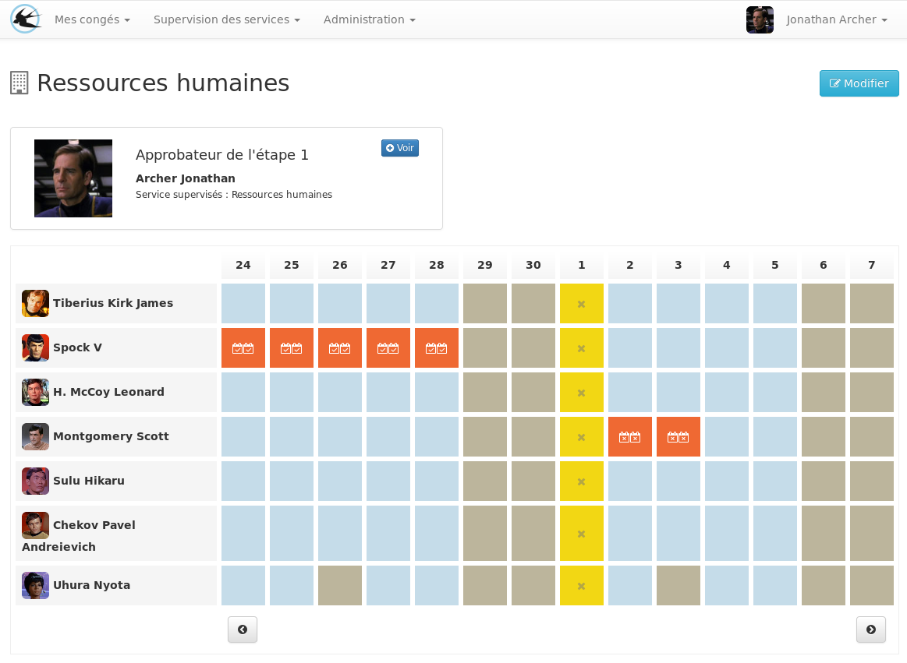

Gadael
Gestion des congés et du temps de travail

- Hébergement SaaS https://www.gadael.com
- Open source http://www.gadael.org
Actions des utilisateurs
- Les types de demandes possibles :
- ❶ Absence.
- ❷ Récupération des heures supplémentaires.
- ❸ Épargner des jours de congés sur un compte épargne temps.
❶ Absence
Etape 1: choix de la période d'absence
Etape 2: répartition de la durée sur les droits de congés
❷ Récupération des heures supplémentaires
Déclaration d'une période travaillée en dehors des heures de travail du contrat
Après approbation, un nouveau droit compensatoire sera octroyé
❸ Épargner des jours de congés sur un compte épargne temps.
permettre au salarié d’accumuler des droits à congé rémunéré ou de bénéficier d’une rémunération, immédiate ou différée, en contrepartie des périodes de congé ou de repos non prises ou des sommes qu’il y a affectées.
Approbation des demandes
- L'administrateur défini des services de façon hiérarchique
- Chaque chef de service doit valider les demandes des membres de son service et des sous-services
L'approbateur
Reçoit une notification par mail avec un lien vers la liste des demandes en attente
Vue planning de service
Respect des règlementations
Un paramétrage des droits très élaboré

Temps partiels
L'administrateur peut créer autant de droits de que de régimes à temps partiels.
Ou
Paramétrer la consomation sur les droits en prenant en compte les options du régime.
- Différents types de consomation paramétrables:
- Consommer les jours ouvrés suivants
- Consommer le solde proportionellement à la présence
Interactions avec d'autres logiciels
Google agenda
Copie des absences dans un agenda personnel supplémentaire
Il est possible de partager ses congés avec des tiers
On peut s'authentifier avec un compte google professionel
Export vers les logiciels de paie
- Export générique des demandes du mois
- Export spécifique pour Sage paie
- Gestion de la répartition des jours pour les périodes de congés à cheval sur deux mois
Export des soldes de congés
Les soldes de congés peuvent êtres exportés à une date donnée dans le passé
Les avantages de la solution Gadael
Planificiation des paramètres à l'avance
Il est possible de planifier à l'avance les changements de régimes, les changements de rythmes de travail et les modification de jours fériés
Règles d'utilisation des droits
Il est possible de paraméter les droits pour
- Les congés de fractionnement
- Les droits d'ancienneté
- La diminution automatique des RTT en fonction des arrets maladie
- Calculer automatiquement le nombre de RTT